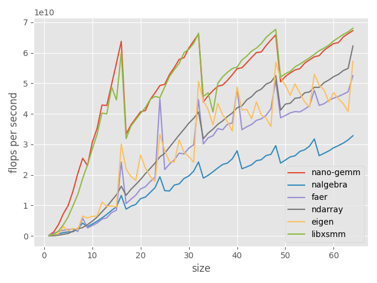
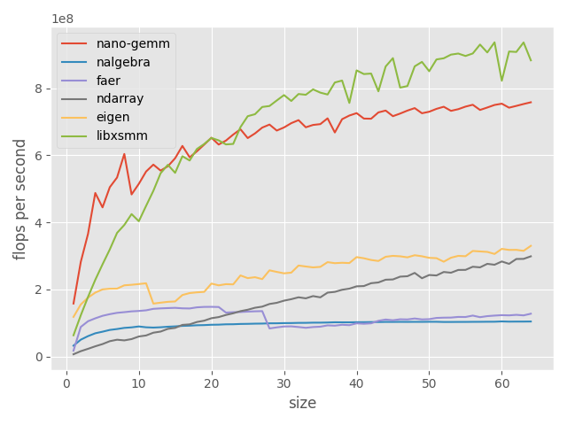
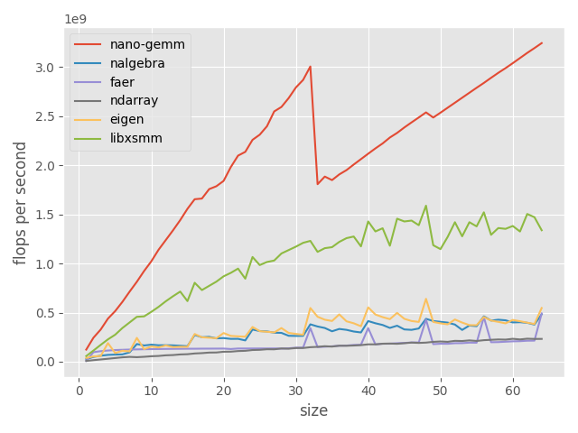

writing the fastest* tiny matmul in rust
prerequisites: basic familiarity with linear algebra
(*) almost always the fastest when the size is only known at runtime... and only on x86/x86_64. but hey! this works for most people.
what is matrix multiplication and why should we care?
in the context of programming, a matrix can be essentially thought of as a 2d array. it usually contains numerical entries that can be added and multiplied, among other interesting operations.
multiplying two matrices $A$ and $B$ is an operation that takes a row from $A$, multiplies it elementwise by a column from $B$, then accumulates the sum into the output matrix.
matrix multiplication is used for all sorts of applications, from robotics to machine learning to physics simulations. in some of these applications, the matrices we multiply are small. even worse, sometimes the sizes aren't known at compile-time, which means we can't just generate a bunch of nice unrolled loops and call it a day, if we want a fast implementation, that is.
optimizing tiny matrix multiplication
one of the things that make matrix multiplication fun to optimize is the reusability of data. in the example above, we extract a row from $A$ and a column from $B$ and combine them to get a single element of $C$ (the output matrix). one thing we can do to avoid loading the same data multiple times, is using a given row as many times as possible before we load the next row. a way to do this would be loading a row from $A$, two columns from $B$, and computing the two products in parallel to get us two elements of $C$.
we can keep scaling this up further by loading several rows from $A$ as well.
so what's stopping us from expanding forever until we load both matrices entirely?
the answer is the number of cpu registers at the lowest level, and the cache size at higher levels. the cache size isn't relevant for tiny matrices, so we'll just focus on the register count.
x86_64 exposes 16 simd registers if you have the avx instruction set, which hopefully most people do nowadays.
if you have avx512, then you get double that amount, 32 simd registers.
a simd (single instruction, multiple data) register is what we'll be storing our data in right before the cpu uses it for computations.
although one thing to note is that each simd register can hold multiple floating point values (f64x4 with avx), which is something we'll make good use of.
assuming the matrix $A$ is stored in column major order, our implementation will look like this:
- load
MRvector registers from thekth columns of $A$, starting at theith row. - broadcast
NRvector registers from thekth row of $B$, startingjth column. - multiply each $A$ vector by each $B$ vector and add them to the corresponding accumulator register (we'll have
MR * NRaccumulators in total). k <- k + 1and repeat until there are no more columns from $A$/rows from $B$.
this represents a single iteration of our innermost kernel.
so how do we choose MR and NR?
basically we choose large enough values to use up our registers as much as we can.
we need MR * NR accumulators, MR temporaries for $A$, and NR temporaries for $B$.
if we rearrange things a little then we only need a single temporary register for $B$, so we do that.
this means we need MR * NR + MR + 1 registers. if we pick MR = 3, NR = 4, then that gives us 16, which is exactly the number of registers we have access to.
well, not quite. because we're loading entire registers directly from $A$, we need to handle the case where the number of rows isn't a multiple of the register size.
to get around that i decided to use masked loads and stores.
these require an additional register to store the mask, but allow us to perform partial loads and stores so we don't read (or write to the output) outside the bounds of the matrix.
this means we can only go up to MR = 2, NR = 4. but that's good enough and doesn't seem to adversely affect performance.
we also want kernels that process blocks with MR = 1, NR = 1, MR = 2, NR = 1, MR = 1, NR = 2, and so on to avoid wasting computations.
we can implement heavily optimized versions of those microkernels, each with a fixed number of iterations (up to a certain point where we just switch to a dynamic loop) to avoid the loop overhead. then the only thing left is to combine them in a way that lets us compute the full matrix multiply.
so for a matrix multiply with $(m, n, k) = (11, 6, 4)$, where $A$ is $m \times k$, $B$ is $k \times n$ and $C$ is $m \times n$, and assuming a register size of 4, we can use:
- a microkernel of size $(4 \times 2, 4, 4)$ for the top left corner,
- a microkernel of size $(4 \times 2, 2, 4)$ for the top right corner,
- a microkernel of size $(4 \times 1\ (\text{mask size} = 3), 4, 4)$ for the bottom left corner,
- a microkernel of size $(4 \times 1\ (\text{mask size} = 3), 2, 4)$ for the bottom right corner.
there's one issue though, the matrix dimensions and kernel sizes are only known at runtime. so we write a bunch of millikernels that take the microkernels as function pointers and execute them.
the primary millikernel uses the largest kernel size until we reach the tail of the output matrix (either rows or columns), then we switch to smaller kernels to avoid going out of bounds.
the other millikernels are variants of the primary one. we have unrolled versions for $1 \times 1$ microkernel calls, $1 \times 2$, $2 \times 1$ and $2 \times 2$.
then we have a millikernel that handles the edge case where $A$ or $C$ isn't column major, where we first copy them to temporary column major matrices, perform the computation using the primary kernel then copy the result back to the output matrix.
the millikernel is also stored as a function pointer when we compile our top-level kernel (along with other metadata such as MR, NR, the size of a simd register, the simd mask, etc.).
when we call the top level kernel, it passes the microkernel function pointers to the millikernel, which in turn calls those function pointers.
once a kernel is computed, we can reuse it for future matrix multiply calls with the same dimensions to amortize the cost of constructing it (which is still rather low, on the order of 10-20 nanoseconds).
benchmarks
we compare our implementation (nano-gemm) against that of other libraries, such as faer, nalgebra, ndarray (using intel mkl as a backend), eigen and libxsmm.
we obtain the following results on an i5-11400 @2.6ghz:

square ($m = n = k$) matrix multiply (higher is better)

wide ($m = 4, k = 4, n = \text{size}$) matrix multiply (higher is better)

tall ($n = 4, k = 4, m = \text{size}$) matrix multiply (higher is better)
the code is available on github along with the benchmarks, and will be published into a proper crate once i finish cleaning it up.